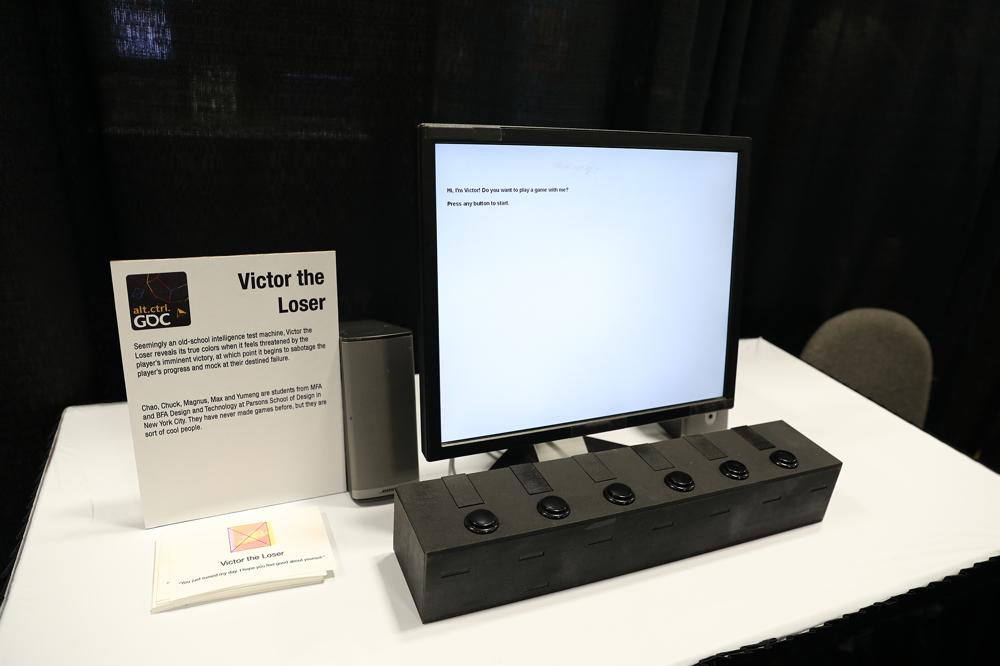
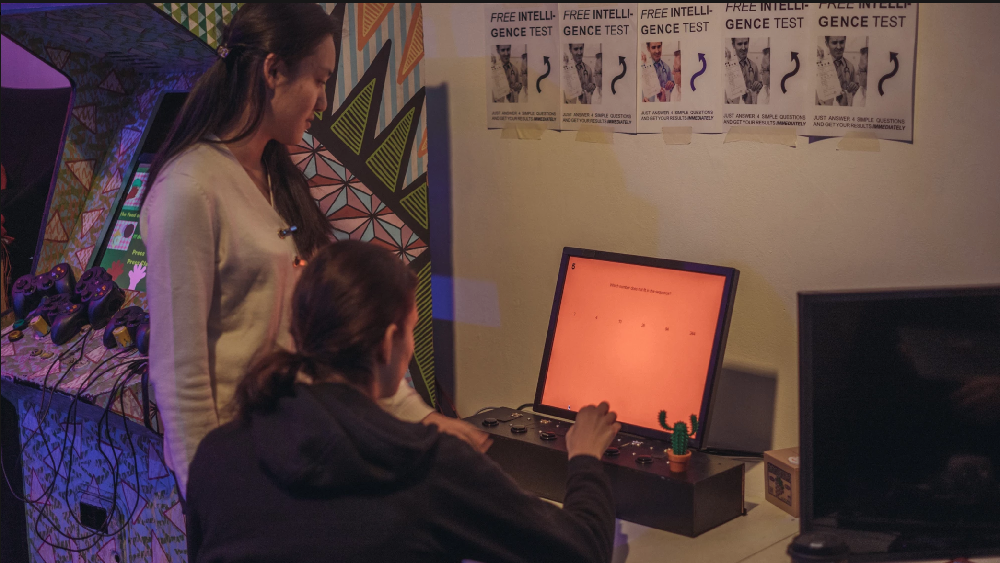

Victor the Loser
2016-2017
In collaboration with Chuck Kuan, Jane Mitchell, Chao-Hui Tu, Xianghan Ma, Magnus Pind
Seemingly an old-school intelligence test machine, Victor the Loser reveals its true colors when it feels threatened by the player’s imminent victory, at which point it tries to sabotage the player’s progress and mock their destined failure. Victor is a bad loser.
We started out by thinking about the different kinds of people who play games. One of the things that we landed on was this idea of a bad loser - someone who really wants to play with you, but gets a bit unhappy when they start to lose. Sometimes you have to let them win a little in order to prevent drama. What are you really trying to accomplish while playing with Victor? Our game attempts to redefine what it means to win, especially because Victor only cheats when you are winning. It puts an emphasis on being just ok at playing a game. Victor provides an alternative experience focused on the journey versus the result, a journey that is unexpected and becomes a negotiation.
Victor at Game Developer Conference's Alt-Control section in 2017:
We showcased Victor at GDC. More information about the process of making Victor is here.
Victor at Babycastle in 2016:
Second iteration of Victor: